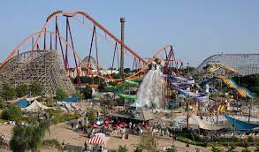

Places to Visit in Illinois
1.Downtown Chicago

The series is centered around the journey of twelve-year-old Aang, the current Avatar and last survivor of his nation, the Air Nomads, along with his friends Katara, Sokka, and later Toph, as they strive to end the Fire Nation's war against the other nations of the world.
2.Six Flags
Princess Yona lives a life of luxury and ease, completely sheltered from the problems of the seemingly peaceful Kingdom of Kouka; however, the sudden murder of the king and betrayal of her beloved cousin Su-won places Yona's life in mortal peril. Forced to escape only with Son Hak, who is both her childhood friend and bodyguard, the naïve princess soon discovers that Kouka is not the idyllic place she envisioned it to be. Poverty, strife, and corruption run rampant, making reclaiming the throne nothing more than a wishful fantasy given the kingdom's current state.
3.Naperville
A coming-of-age story about a group of college athletes who are fighting for their dreams, experiencing and finding love in the process, and growing every step of the way. A unforgettable story about youth, friendship and love.